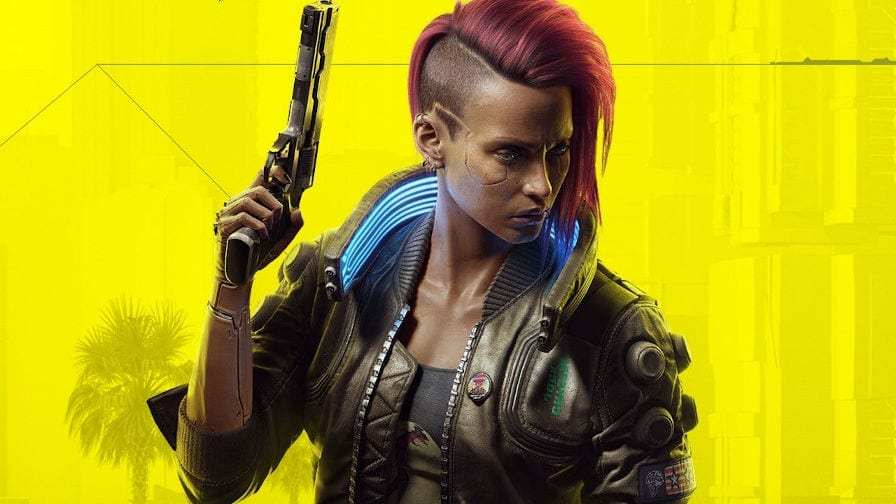

⚠️ O novo começo para Cyberpunk 2077
Lançado em dezembro de 2020, Cyberpunk 2077 foi um dos jogos mais aguardados da história recente. Com trailers cinematográficos, promessas de mundo aberto revolucionário e uma atmosfera futurista envolvente, o game da CD Projekt Red gerou uma expectativa gigantesca. No entanto, o que era para ser uma celebração se tornou rapidamente uma decepção para milhões de jogadores.
No lançamento, o jogo estava repleto de bugs, falhas gráficas e problemas de desempenho — especialmente nos consoles da geração passada (PS4 e Xbox One). Isso gerou uma avalanche de críticas negativas, reembolsos em massa e até a remoção temporária do jogo da PlayStation Store. A reputação da empresa, que antes era sinônimo de confiança após o sucesso de The Witcher 3, ficou gravemente abalada.
Mas a história não terminou aí. A desenvolvedora polonesa decidiu encarar os problemas de frente e iniciou uma jornada de reestruturação. Com uma série de atualizações ao longo de 2021 e 2022, muitos bugs foram corrigidos, mecânicas aprimoradas e novos conteúdos adicionados. O ápice dessa recuperação veio com o lançamento da expansão “Phantom Liberty” e o update 2.0, que reformulou totalmente os sistemas de habilidades, combate, IA e interface.
Hoje, Cyberpunk 2077 é reconhecido como um dos melhores RPGs modernos, com um enredo envolvente, ambientação riquíssima e imersão incomparável. A volta por cima é tão impressionante que muitos consideram o jogo um exemplo de como ouvir a comunidade e se comprometer com qualidade pode reverter até os piores cenários.
Essa trajetória prova que, mesmo após um desastre inicial, um jogo pode se reinventar e conquistar o respeito da comunidade gamer — basta compromisso, transparência e muita dedicação.